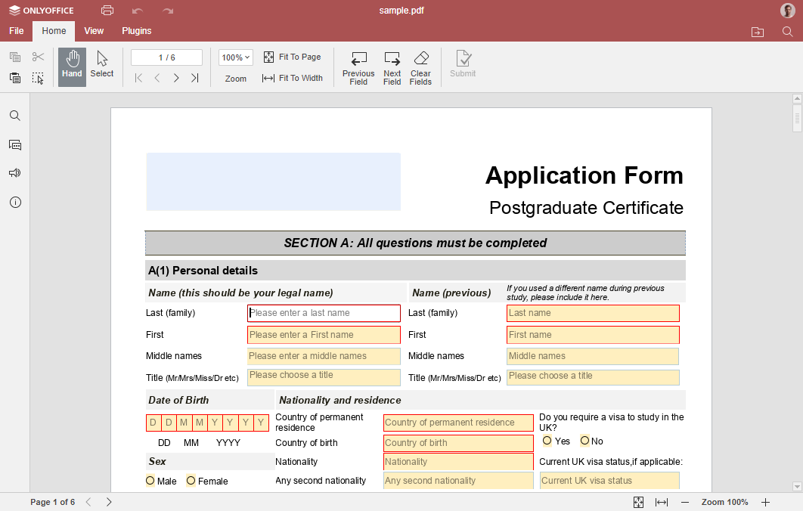

Ausfüllen eines Formulars
Sie können die Formularfelder in der PDF-Datei ausfüllen und das Formular anschließend absenden, ausdrucken oder herunterladen. Sofern Sie über entsprechende Zugriffsrechte verfügen, können Sie über die Schaltfläche PDF bearbeiten in der oberen Symbolleiste in die Bearbeitung wechseln.
Wie kann man ein Formular ausfüllen:
-
Öffnen Sie die PDF-Datei.

- Füllen Sie alle Pflichtfelder aus. Falls das Formular ein Datumsfeld enthält, wählen Sie das Datum mithilfe der Datumsauswahl aus. Pflichtfelder sind rot markiert. Navigieren Sie mit den Schaltflächen Vorheriges Feld oder Nächstes Feld in der oberen Symbolleiste zwischen den Feldern oder klicken Sie auf das gewünschte Feld.
- Verwenden Sie die Schaltfläche Alle Felder leeren, um alle Eingabefelder zu leeren.
- Verwenden Sie die Navigationstools, um im PDF zu navigieren, den Zoom anzupassen und die Seite oder Breite anzupassen.
-
Nachdem Sie alle Felder ausgefüllt haben, klicken Sie oben in der Symbolleiste auf die Schaltfläche Senden, um das Formular zur weiteren Bearbeitung zu senden. Bitte beachten Sie, dass dieser Vorgang nicht rückgängig gemacht werden kann. Das Formular kann erst abgeschickt werden, wenn alle Pflichtfelder ausgefüllt sind.
Wenn Sie die Serverversion von ONLYOFFICE Docs verwenden, hängt das Vorhandensein der Schaltfläche Senden von der Konfiguration ab. Wenn keine Konfiguration zum Senden eines Formulars vorhanden ist, wird die Schaltfläche als Speichern unter angezeigt. Lesen Sie diesen Artikel, um mehr zu erfahren.
In den Desktop-Editoren wird anstelle der Schaltfläche Senden die Schaltfläche Speichern als angezeigt.
Sie können das Formular auch über die Schaltfläche Drucken ausdrucken oder zur Registerkarte Datei wechseln und das Formular in einem der unterstützten Formate herunterladen.